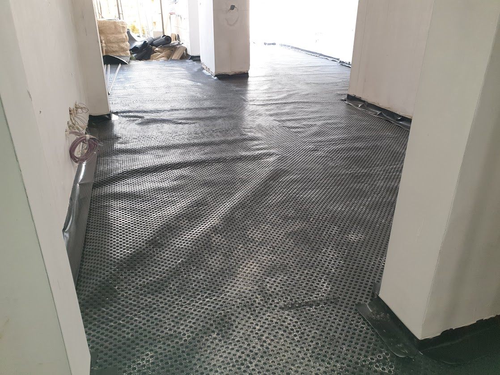

Professional Floor Screeding in Malta
Screed is applied over the structural concrete slab to create a smooth, level surface for tiling, vinyl, parquet or any other floor finish. A proper screed protects underfloor heating pipes, encases service conduits and ensures the finished floor is flat without humps or dips that would cause tiles to crack or hollow over time.
We apply both traditional sand-cement screed and self-levelling compound depending on the project requirements and time constraints.




What Our Screeding Service Includes
- Sand and cement screed (bonded, unbonded and floating)
- Self-levelling compound application
- Underfloor heating pipe encapsulation
- Service conduit encasement
- Expansion joint installation to prevent cracking
- Level checking and correction across large areas
- Surface hardener treatment where required
- Curing compound application for moisture retention
Materials We Use
- Sharp sand and cement (1:3 and 1:4 mix)
- Fibreglass or polypropylene fibres for crack resistance
- Self-levelling compound (Mapei, Weber or equivalent)
- Primer coat for self-levelling on absorbent substrates
- Polythene DPC membrane (for unbonded floating screed)
- Screed pins and laser level for accurate thickness control
Why It Matters
Screed must achieve the correct thickness (typically 50–75mm) and must cure sufficiently before tiling begins. Tiling on green or poorly mixed screed causes adhesive failures and hollow tiles. Our team works to the correct mix ratios, allows proper curing time and confirms flatness with a straightedge before any floor finish is applied.